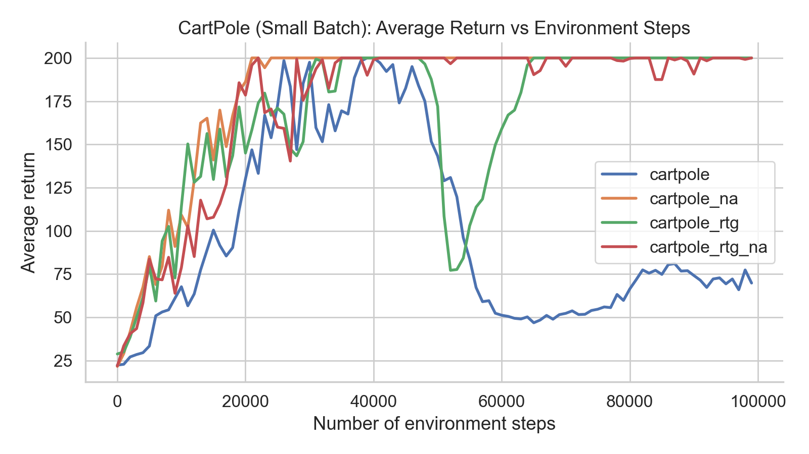
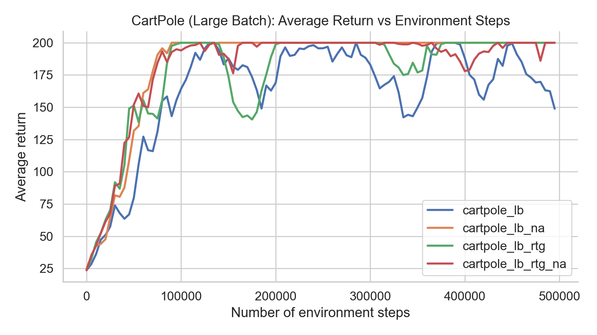
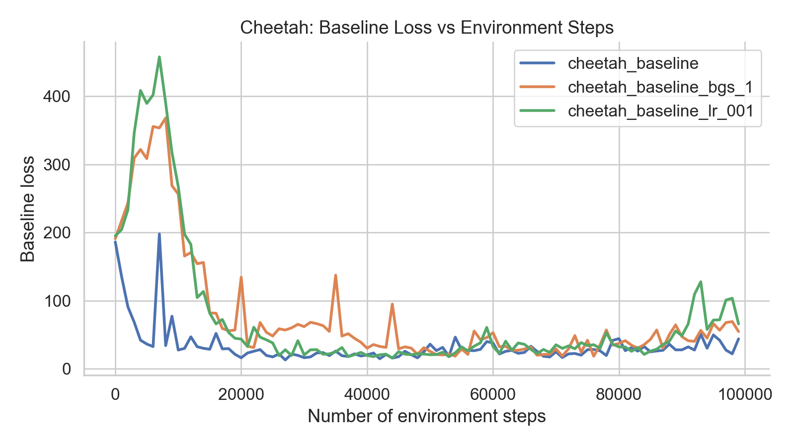
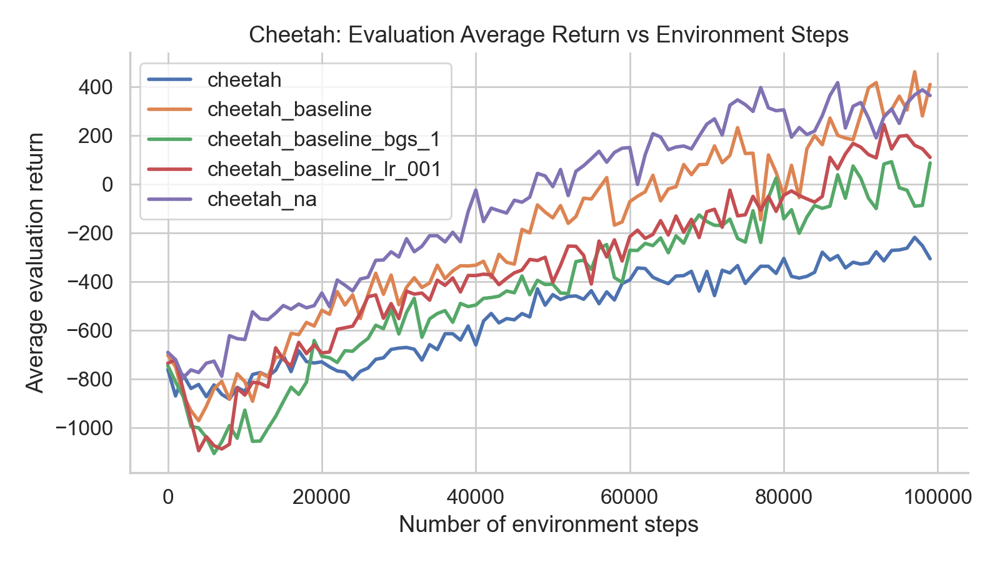
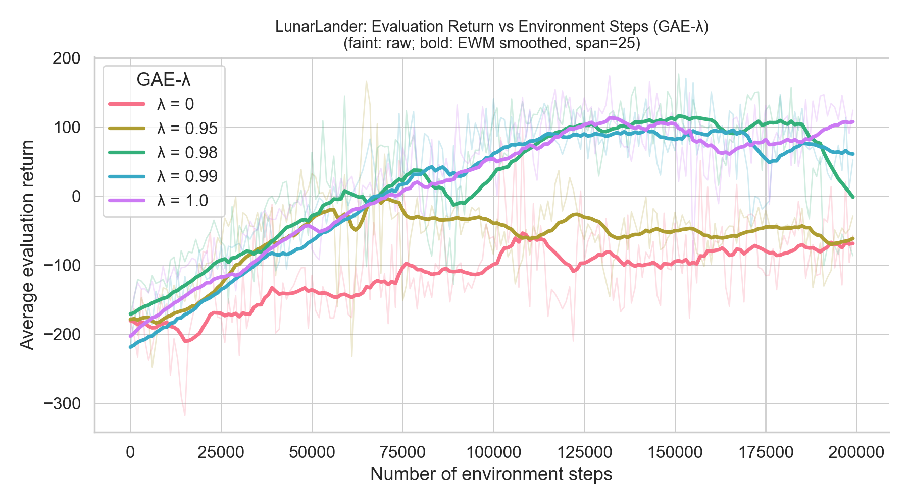
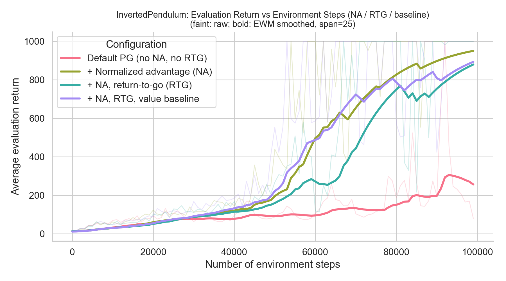

Policy Gradients
Overview
In this project I implemented policy-gradient (REINFORCE-style) models to solve classic Gymnasium control tasks such as CartPole, HalfCheetah, LunarLander, InvertedPendulum. In addition to the vanilla (REINFORCE) policy gradient algorithm, I explored different variance reductions techniques including reward-to-go, discounting, and advantage normalization.
Objective
Before jumping into the details of policy gradient algorithms, recall that in reinforcement learning, the objective is to learn optimal parameters \( \theta^* \) of a policy \( \pi_\theta(a \mid s) \) that maximizes the expected return. This is often expressed as: $$ J(\pi_\theta) = \mathbb{E}_{\tau \sim \pi_\theta}[r(\tau)] $$ where \( \tau \) is a trajectory sampled from the policy \( \pi_\theta \) and \( r(\tau) \) is the reward of the trajectory: $$ \pi_\theta(\tau) = p(s_0, a_0, s_1, a_1, ..., s_T, a_T) = p(s_0) \pi_\theta(a_0 | s_0) \prod_{t=1}^{T - 1} p(s_t | s_{t-1}, a_{t-1}) \pi_\theta(a_t | s_t) $$ $$ r(\tau) = \sum_{t=0}^{T} r(s_t, a_t) $$ Policy gradients algorithms optimize the policy via gradient ascent: \( \theta \leftarrow \theta + \alpha \nabla_\theta J(\pi_\theta) \). Here, \( \nabla_\theta J(\pi_\theta) \) is called the policy gradient, and algorithms that optimize the policy in this way are called policy gradient algorithms.
Policy Gradient Estimation
To calculate the policy gradient means taking the gradient of the above objective: $$ \begin{align} \nabla_\theta J(\theta) &= \nabla_\theta \int \pi_\theta(\tau)\, r(\tau)\, d\tau \\ &= \int \pi_\theta(\tau)\, \nabla_\theta \log \pi_\theta(\tau)\, r(\tau)\, d\tau \\ &= \mathbb{E}_{\tau \sim \pi_\theta(\tau)} \left[ \nabla_\theta \log \pi_\theta(\tau)\, r(\tau) \right] \end{align} $$ However, this integral is intractable because we we don’t know the full distribution over all trajectories. Instead, we can approximate the policy gradient using a batch of \( N \) sampled trajectories: $$ \begin{align} & \nabla_\theta J(\theta) \approx \textcolor{RoyalBlue}{\frac{1}{N} \sum_{i=1}^N} \nabla_\theta \log \pi_\theta(\tau_i)\ r(\tau_i) \\ &= \textcolor{RoyalBlue}{\frac{1}{N} \sum_{i=1}^N} \left( \textcolor{ForestGreen}{\sum_{t=0}^{T - 1} \nabla_\theta \log \pi_\theta(a_t \mid s_t)} \right) \cdot \left( \textcolor{BurntOrange}{\sum_{t=0}^{T - 1} r(s_t, a_t)} \right) \end{align} $$
We start from the objective: \[ J(\theta) = \mathbb{E}_{\tau \sim \pi_\theta}[r(\tau)] = \int \pi_\theta(\tau)\, r(\tau)\, d\tau. \] Taking a gradient gives \[ \nabla_\theta J(\theta) = \nabla_\theta \int \pi_\theta(\tau)\, r(\tau)\, d\tau. \]
Using the log-derivative trick \[ \nabla_\theta \pi_\theta(\tau) = \pi_\theta(\tau)\, \nabla_\theta \log \pi_\theta(\tau), \] we rewrite this as \[ \nabla_\theta J(\theta) = \int \pi_\theta(\tau)\, \nabla_\theta \log \pi_\theta(\tau)\, r(\tau)\, d\tau = \mathbb{E}_{\tau \sim \pi_\theta}\!\left[\nabla_\theta \log \pi_\theta(\tau)\, r(\tau)\right]. \] This identity is just a direct consequence of the chain rule; a concise derivation is available in this note on the log-derivative trick.
Why does the integral become an expectation? For any random variable \(X\) with density \(p(x)\), \[ \mathbb{E}_{X \sim p}[f(X)] = \int f(x)\, p(x)\, dx. \] In our case, \(X\) is a trajectory \(\tau\), \(p(x)\) is \(\pi_\theta(\tau)\), and \(f(\tau) = \nabla_\theta \log \pi_\theta(\tau)\, r(\tau)\). So \[ \int \pi_\theta(\tau)\, \nabla_\theta \log \pi_\theta(\tau)\, r(\tau)\, d\tau = \mathbb{E}_{\tau \sim \pi_\theta}\!\left[\nabla_\theta \log \pi_\theta(\tau)\, r(\tau)\right]. \] This is just the definition of expectation under the trajectory distribution.
This expectation is over all trajectories, so in practice we approximate it with Monte Carlo samples: \[ \nabla_\theta J(\theta) \approx \textcolor{RoyalBlue}{\frac{1}{N} \sum_{i=1}^N} \nabla_\theta \log \pi_\theta(\tau_i)\, r(\tau_i). \] Here we are iterating through each of the \(N\) sampled trajectories and averaging their contributions.
Next we expand the two trajectory-level terms:
- \(\textcolor{ForestGreen}{\nabla_\theta \log \pi_\theta(\tau_i)}\): since \[ \pi_\theta(\tau_i)=p(s_0)\prod_{t=0}^{T-1}\pi_\theta(a_t\mid s_t)\,p(s_{t+1}\mid s_t,a_t), \] taking \(\log\) turns products into sums, and taking \(\nabla_\theta\) removes dynamics terms that do not depend on \(\theta\), leaving \[ \textcolor{ForestGreen}{\sum_{t=0}^{T - 1}\nabla_\theta\log \pi_\theta(a_t\mid s_t)}. \]
- \(\textcolor{BurntOrange}{r(\tau_i)}\): the return for one trajectory is the sum of per-timestep rewards, \[ \textcolor{BurntOrange}{\sum_{t=0}^{T - 1} r(s_t,a_t)}. \]
Putting both expansions together gives the REINFORCE estimator shown above: \[ \textcolor{RoyalBlue}{\frac{1}{N}\sum_{i=1}^{N}} \left(\textcolor{ForestGreen}{\sum_{t=0}^{T - 1}\nabla_\theta\log \pi_\theta(a_t\mid s_t)}\right) \left(\textcolor{BurntOrange}{\sum_{t=0}^{T - 1}r(s_t,a_t)}\right). \]
This is the main idea behind REINFORCE, the simplest policy gradient algorithm. REINFORCE samples trajectories from the current policy, calculates the return of each trajectory, and updates the policy parameters using those returns to make actions taken in high-return trajectories more likely.
However, as you will see, REINFORCE has some significant limitations: its gradient estimates have high-variance, and scoring every action with the full trajectory return makes credit assignment inefficient. The rest of this project explores variance-reduction techniques (reward-to-go, learned baselines, GAE, and advantage normalization) that target these issues.
Architecture
The overall system follows the standard on-policy policy-gradient loop. Each training iteration: (1) collect trajectories by running the current policy in the environment, (2) compute return or advantage targets from the collected rewards, (3) update the policy (and optionally a value network) on the batch of \((s_t, a_t)\) transitions.
Policy network. The actor is a feedforward neural network that maps states to action distributions. For discrete actions, the network outputs logits and defines a categorical distribution \(\pi_\theta(a \mid s)\). For continuous control, it outputs the mean of a Gaussian policy; the standard deviation is often a separate learnable vector (state-independent noise) so exploration does not collapse too quickly. During data collection, actions are sampled from this distribution; during training, the same distribution is used to evaluate \(\log \pi_\theta(a_t \mid s_t)\).
MLP policy (actor)
class MLPPolicy(nn.Module):
def __init__(self, ob_dim, ac_dim, discrete, n_layers, layer_size, lr):
super().__init__()
if discrete:
self.net = build_mlp(ob_dim, ac_dim, n_layers, layer_size)
else:
self.mean_net = build_mlp(ob_dim, ac_dim, n_layers, layer_size)
self.logstd = nn.Parameter(torch.zeros(ac_dim)) # shared noise
self.discrete = discrete
self.optimizer = optim.Adam(self.parameters(), lr)
def forward(self, obs):
if self.discrete:
logits = self.net(obs)
return Categorical(logits=logits)
mean = self.mean_net(obs)
std = torch.exp(self.logstd).expand_as(mean)
return Normal(mean, std)
@torch.no_grad()
def get_action(self, obs):
return self.forward(obs).sample()Policy update. Policy parameters are optimized with stochastic gradient ascent on the REINFORCE objective. For each transition, the loss is proportional to \(-\log \pi_\theta(a_t \mid s_t)\) times an advantage estimate \(\hat A_t\). Averaging over the batch and applying a standard optimizer (e.g. Adam) yields the policy gradient step.
Policy-gradient update (MLPPolicyPG)
class MLPPolicyPG(MLPPolicy):
def update(self, obs, actions, advantages):
dist = self.forward(obs)
if self.discrete:
log_pi = dist.log_prob(actions.squeeze(-1))
else:
log_pi = dist.log_prob(actions).sum(dim=-1)
loss = -(log_pi * advantages).mean()
self.optimizer.zero_grad()
loss.backward()
self.optimizer.step()Value network (optional). When using a learned baseline or GAE, a second network estimates the state value \(V_\phi(s)\)—expected discounted return from state \(s\) under the current policy. Architecturally it mirrors the policy MLP but outputs a single scalar per state. The value network is trained by regression to return targets and is used only to form advantages; it does not select actions at rollout time.
Vanilla policy gradients
Reward-to-go
In the basic REINFORCE estimator, each action is scored using the total trajectory reward. Intuitively, the policy cannot affect rewards already observed in the past, so a common variance reduction is reward-to-go: the return for timestep \(t\) only sums rewards from \(t\) onward. Compared to vanilla REINFORCE, the only structural change is in the reward sum: it starts at the current decision time \(t\) (not at \(0\)).
The policy gradient is then estimated as $$ \nabla_\theta J(\theta) \approx \frac{1}{N} \sum_{i=1}^N \left( \sum_{t=0}^{T - 1} \nabla_\theta \log \pi_\theta(a_t \mid s_t) \right) \cdot \left( \sum_{\textcolor{RoyalBlue}{t' = t}}^{T - 1} r(s_{t'}, a_{t'}) \right). $$
Discounting
Another way to reduce variance is to discount rewards by \(\gamma \in (0,1]\) before summing. Intuitively, nearer-term rewards are more reliable targets than very distant ones, because long-horizon sums accumulate more environment randomness. Applying discounting to reward-to-go multiplies each future term by \(\gamma^{t'-t}\): $$ \nabla_\theta J(\theta) \approx \frac{1}{N} \sum_{i=1}^N \left( \sum_{t=0}^{T - 1} \nabla_\theta \log \pi_\theta(a_t \mid s_t) \right) \cdot \left( \sum_{t'=t}^{T - 1} \textcolor{BurntOrange}{\gamma^{t' - t}} r(s_{t'}, a_{t'}) \right). $$ This encourages actions that have a more immediate impact on the return.
Advantage normalization
Even after choosing a return estimator, policy-gradient updates can have unstable scale across batches. A simple fix is to normalize advantages within each minibatch: instead of using \(A^\pi(s_t,a_t)\) directly, use \(\displaystyle \frac{A^\pi(s_t,a_t)-\mu}{\sigma+\epsilon}\), where \(\mu\) and \(\sigma\) are the batch mean and standard deviation and \(\epsilon\) avoids division by zero. This does not change which actions look better within a batch, but it prevents a few extreme advantages from dominating the gradient magnitude.
Implementation
Return targets are computed from each trajectory’s reward sequence. In the trajectory-level estimator, every timestep in an episode is assigned the same Monte Carlo return—the full discounted sum from the start of the episode. With reward-to-go, each timestep instead receives only the discounted sum of rewards from that step onward: \(Q_t = \sum_{t'=t}^{T-1} \gamma^{t'-t} r_{t'}\).
Transitions from all trajectories in a batch are pooled into one dataset. Without a value baseline, the advantage at each step is simply the return target \(Q_t\) (or the undiscounted return, depending on settings). Advantage normalization subtracts the batch mean and divides by the batch standard deviation so gradient steps have a stable scale across iterations. The policy network is then updated once per batch using the weighted log-likelihood loss described above.
Experiment 1: CartPole
The plots below show the average return vs. environment steps for different return estimators and
-na (normalize advantages).

CartPole Small Batch – Learning Curves

CartPole Large Batch – Learning Curves
Which return estimator is better without advantage normalization?
Reward-to-go clearly outperforms the trajectory-centric (full-return-at-every-timestep) estimator:
cartpole_rtg and cartpole_lb_rtg reach the maximum return, while
cartpole and cartpole_lb plateau much lower (or oscillate well below the cap).
Why is one generally preferred? Reward-to-go assigns each timestep a return that only depends on rewards after that action—the parts of the trajectory the policy can still influence—so it targets the same policy gradient in expectation but with far lower variance than repeating the full trajectory return at every step.
Did advantage normalization help?
Yes, especially for the trajectory-centric runs: cartpole_na and cartpole_lb_na
climb to strong returns where the unnormed baselines struggle. With reward-to-go, learning is already
stable, so -na is a smaller correction (both RTG variants still reach high return here).
Did batch size matter? Yes. Larger batches reduce gradient noise, so the large-batch curves are smoother and the trajectory-centric large-batch policy reaches higher average return than the small-batch counterpart, though reward-to-go remains the dominant improvement at either batch size.
Neural network baseline
Next, I train a value function as a neural network baseline to help reduce variance from the REINFORCE algorithm.
Baselines
Another variance reduction is subtracting a baseline that does not depend on the sampled action (it may depend on state). Note that a constant baseline \(b\) does not introduce bias into the policy gradient objective, so it is safe to use: $$ \nabla_\theta \mathbb{E}_{\tau \sim \pi_\theta} \left[ b \right] = \mathbb{E}_{\tau \sim \pi_\theta} \left[ \nabla_\theta \log \pi_\theta(\tau) \cdot b \right] = 0. $$
A practical choice is a learned state-value function \(V^\pi_\phi(s_t)\) trained to predict future return, $$ V^\pi(s_t) \approx \sum_{t'=t}^{T - 1} \mathbb{E}_{\pi_\theta} \left[ \gamma^{t' - t} r(s_{t'}, a_{t'}) \mid s_t \right], $$ and subtract it from return targets so advantages measure “better than usual for this state.” Plugging this into the policy-gradient estimator yields $$ \nabla_\theta J(\theta) \approx \frac{1}{N} \sum_{i=1}^{N} \left( \sum_{t=0}^{T - 1} \nabla_\theta \log \pi_\theta(a_t^i \mid s_t^i) \right) \left( \sum_{t'=t}^{T - 1} \gamma^{t' - t} r(s_{t'}^i, a_{t'}^i) - \textcolor{BurntOrange}{V^\pi_\phi(s_t^i)} \right). $$
Implementation
The value network \(V_\phi(s)\) is a feedforward network with the same depth and width as the policy, but a single scalar output per state. It is trained to predict return targets from the current batch: the same Monte Carlo estimates used for the policy (trajectory return or reward-to-go). Training minimizes mean-squared error, \(\mathcal{L}_{\text{value}} = \frac{1}{N}\sum_t (V_\phi(s_t) - Q_t)^2\). Because the policy keeps changing, the value function is typically updated for several gradient steps per iteration so it stays close to the returns the current policy actually produces.
Value critic (baseline)
class ValueCritic(nn.Module):
def __init__(self, ob_dim, n_layers, layer_size, lr):
super().__init__()
self.network = build_mlp(ob_dim, output_size=1,
n_layers=n_layers, size=layer_size)
self.optimizer = optim.Adam(self.network.parameters(), lr)
def forward(self, obs):
return self.network(obs).squeeze(-1) # scalar V(s) per state
def update(self, obs, return_targets):
preds = self.forward(obs)
loss = F.mse_loss(preds, return_targets)
self.optimizer.zero_grad()
loss.backward()
self.optimizer.step()Advantages are formed by subtracting the value prediction from the return target: \(A_t = Q_t - V_\phi(s_t)\). Intuitively, a positive advantage means the action did better than the critic expected for that state. The policy is updated on these advantages while the value network is updated separately on the return targets—the two losses are not chained together, which keeps the baseline unbiased for the policy gradient.
Experiment 2: HalfCheetah
Compare policy gradient with and without --use_baseline on
HalfCheetah-v4, including baseline loss and evaluation return plots, and an
ablation on baseline step count or learning rate.
Rollouts: no baseline (first video) vs with learned value baseline (second).
Without a baseline, the policy gradient is driven by raw return targets that have very high variance on
HalfCheetah-v4: long horizons and dense forward reward mean many action sequences can yield
similar totals, so the signal for “which timesteps helped” is noisy and updates often fail to consistently
push coordinated forward locomotion—you tend to see hesitant or stuck-looking gaits in the first rollout.
With a learned baseline, advantages become \(A_t \approx Q_t - V_\phi(s_t)\), i.e. “better than usual for this state,” which removes much of the shared return mass and sharpens credit assignment. That lower-variance learning signal matches the second video: smoother, sustained forward progress instead of struggling near the same average speed.

Cheetah Baseline – Training Loss

Cheetah – Evaluation Return
Baseline Runs (decrease -bgs or -blr):
the default baseline (-blr 0.01, -bgs 5) is the most reliable.
When I reduce baseline updates (either smaller -blr or fewer -bgs),
the baseline loss stays higher and fluctuates more.
Intuition: the baseline is trying to estimate returns; if it learns too slowly each iteration,
that estimate is blurry, so it cannot cleanly separate good and bad actions.
Effect on policy performance: policy returns follow the same pattern.
The default baseline is clearly best, while -blr 0.001 and especially
-bgs 1 lag behind.
Intuition: if the baseline is weak, the advantage estimates are noisy, so policy updates point in a
less consistent direction and learning slows down.
Why advantage normalization is so strong (no baseline case):
this gives a surprisingly large gain: cheetah_na works much better than plain
cheetah.
Intuition: normalization keeps the update scale stable from batch to batch.
It does not change which actions are better, but it prevents a few very large advantages from
dominating the gradient.
In HalfCheetah, where returns are noisy and spread out, this stabilization alone can make training go
from unstable to consistently improving.
Generalized advantage estimation
Temporal difference (TD) learning updates estimates at each timestep from the immediate reward plus a bootstrapped prediction of the next state’s value—rather than waiting for the full episode return. That one-step lookahead is lower variance but can be biased when the value function is wrong. GAE-λ builds on this by mixing multi-step TD-style advantages to trade off bias and variance; with a learned value function, TD residuals \(\delta_t\) are combined recursively with \(\gamma\) and \(\lambda\).
From advantages to TD residuals
The advantage answers “was this action better or worse than expected?”: $$ A^\pi_t = Q^\pi(s_t, a_t) - V^\pi(s_t). $$ In practice we do not know the true advantage. One approximation replaces \(Q\) with Monte Carlo returns, but that reintroduces high variance because a small change in late rewards can swing the entire tail sum.
Bootstrapping with a learned value function reduces variance by using $$ A^\pi(s_t, a_t) \approx \delta_t = r(s_t, a_t) + \gamma V^\pi(s_{t+1}) - V^\pi(s_t), $$ at the cost of bias when \(V_\phi\) is inaccurate.
\(n\)-step mixtures and GAE-\(\lambda\)
To trade bias and variance, we can use an \(n\)-step advantage target: $$ A_n^\pi(s_t, a_t) = \sum_{t'=t}^{t+n-1} \gamma^{t' - t} r(s_{t'}, a_{t'}) + \gamma^n V^\pi_\phi(s_{t+n}) - V^\pi_\phi(s_t). $$ Larger \(n\) trusts sampled rewards longer (lower bias, higher variance); smaller \(n\) bootstraps earlier (higher bias, lower variance).
GAE combines these \(n\)-step targets with exponential weights controlled by \(\lambda \in [0,1]\): $$ A^\pi_{\text{GAE}}(s_t, a_t) = \frac{1 - \lambda}{1 - \lambda^{T - t - 1}} \sum_{n=1}^{T - t - 1} \lambda^{n-1} A_n^\pi(s_t, a_t). $$ Here \(\frac{1 - \lambda}{1 - \lambda^{T - t - 1}}\) is a normalizing constant. Large \(\lambda\) emphasizes longer-horizon terms (closer to Monte Carlo); small \(\lambda\) emphasizes short horizons (closer to TD).
For an infinite horizon (\(T=\infty\)), this simplifies to $$ A^\pi_{\text{GAE}}(s_t, a_t) = (1-\lambda)\sum_{n=1}^{\infty}\lambda^{n-1}A_n^\pi(s_t, a_t) = \sum_{t'=t}^{\infty}(\gamma\lambda)^{t' - t}\delta_{t'}. $$ For a finite trajectory, we use $$ A^\pi_{\text{GAE}}(s_t, a_t) = \sum_{t'=t}^{T-1}(\gamma\lambda)^{t' - t}\delta_{t'}, $$ which matches the recursive form used in code: $$ A^\pi_{\text{GAE}}(s_t, a_t) = \delta_t + \gamma\lambda A^\pi_{\text{GAE}}(s_{t+1}, a_{t+1}). $$
Implementation
GAE replaces the simple advantage \(Q_t - V_\phi(s_t)\) with a backward recursion over TD residuals. At each timestep, define the one-step error \(\delta_t = r_t + \gamma V_\phi(s_{t+1}) - V_\phi(s_t)\), where bootstrapping from \(V_\phi(s_{t+1})\) is turned off at terminal states so episodes do not leak across boundaries. Advantages are accumulated backward through the trajectory: \(A_t = \delta_t + \gamma\lambda\, A_{t+1}\) (again masking at episode ends). The parameter \(\lambda\) controls how far credit propagates: \(\lambda \to 0\) emphasizes one-step TD errors (lower variance, more bias); \(\lambda \to 1\) approaches longer-horizon Monte Carlo-style targets.
GAE requires a trained value function and per-timestep rewards, so it is used together with a learned baseline. The value network is still fit to Monte Carlo return targets as before; only the advantage computation changes. Advantage normalization can be applied on top of GAE advantages in the same way as in vanilla policy gradients.
Experiment 3: LunarLander
On LunarLander-v2 environment, I tested different values of \(\lambda \in \{0, 0.95, 0.98, 0.99, 1\}\)
while holding other hyperparameters fixed, and observed how \(\lambda\) affects bias–variance and
model performance.

LunarLander GAE-λ – Evaluation Return
In GAE, \(\lambda\) trades off bias vs variance in the advantage estimate: \(\lambda=0\) uses only the one-step TD residual \(\delta_t\) (bootstrap-heavy, low variance), while \(\lambda=1\) blends TD errors across the whole remaining trajectory, giving a Monte Carlo-like advantage (less bias from a misspecified \(V\), higher variance).
On LunarLander-v2, \(\lambda=0\) learns slowly and stays near poor average returns, while
\(\lambda=1\) reaches much higher evaluation return because successful hovering and landing depend on
multi-step consequences of thrust, which one-step bootstrapping under-credits when the value net is still inaccurate.
\(\lambda=0\)
\(\lambda=1\)
The \(\lambda=1\) video looks better because the policy is trained with advantage targets that carry longer-horizon outcome information, so it can associate small corrections early in a descent with eventual soft touchdowns; with \(\lambda=0\), updates are driven mostly by immediate TD noise and bootstrap error, which matches the choppier, less “landed” behavior you see in the \(\lambda=0\) rollout even when the lander occasionally gets lucky.
Hyperparameters & sample efficiency
Policy gradient methods can be sample-hungry. To show the benefits of all these variance reduction techniques, I compared the vanilla Reinforece policy gradient algorithm against a stack of variance-reduction tricks from earlier sections.
Experiment 4: InvertedPendulum
Goal: reach maximum return (1000) within 100K environment steps on
InvertedPendulum-v4. The plot below shows evaluation average return vs environment steps
(each iteration uses 1000 environment steps). The gray/faint traces are raw eval returns; the bold lines
are the same series lightly smoothed for readability.

InvertedPendulum – Evaluation return (default vs tuned stack)
Best configuration (matches the top curve in the figure).
Same core schedule as the default run (-n 100, -b 1000, default policy MLP and
-lr 5e-3, --discount 1.0), but with
--normalize_advantages, --use_reward_to_go, and --use_baseline
(value critic with default baseline hyperparameters from run.py).
What mattered in tuning.
Advantage normalization (-na) was the largest qualitative change: the default run’s eval
return stays in a low, noisy band, while pendulum_na quickly reaches the environment maximum.
Adding reward-to-go and a learned baseline mainly improved stability and how early the max-return regime
appears (the full stack is the cleanest / fastest of the four).
I did not need to change discount, batch size, or network width for this task once those three options
were enabled—the limiting issue was gradient noise and credit assignment, not raw model capacity.
Default Policy Gradient
Normalized advantages
The -na rollout looks better because normalizing advantages per batch fixes the effective
step size of policy updates: a few lucky trajectories no longer dominate the gradient, so learning keeps
nudging the pendulum upright instead of thrashing between directions.
That matches the curves: default PG rarely sustains near-max torque control, while normalized advantages
track the high-return policy you see in the second video.
Results
Across CartPole, HalfCheetah, LunarLander, and InvertedPendulum, the same theme repeats: policy gradients are unbiased but noisy, and practical learning depends on stacking variance reducers that do not change the true gradient in expectation (or change it in a controlled, bias–variance tradeoff).
Variance reduction techniques used in this project
- Reward-to-go (RTG). Replaces the trajectory-wide return copy at every timestep with returns that only sum rewards after each action, preserving the policy-gradient objective but cutting variance from “double counting” unrelated past rewards.
-
Advantage normalization (
-na). Standardizes advantages within each minibatch so a handful of extreme trajectories do not dominate the update magnitude; this stabilizes optimization without changing which actions are locally better. -
Learned state-value baseline (
--use_baseline). Subtracts \(V_\phi(s_t)\) from return targets so advantages measure “better than usual for this state,” removing shared offset noise while keeping the estimator unbiased when \(V\) is correct on average. - Generalized advantage estimation (GAE-\(\lambda\)). Exponentially blends multi-step TD errors to interpolate between low-variance, biased one-step bootstrapping (\(\lambda \to 0\)) and higher-variance, lower-bias Monte Carlo-style advantages (\(\lambda \to 1\)).
- Larger policy-gradient batches. Estimating the expectation over trajectories with more environment steps per update reduces Monte Carlo noise in both the policy and (when used) baseline gradients.
- Discounting (\(\gamma < 1\)). Down-weights distant rewards, which reduces variance from long-horizon return noise (especially when combined with bootstrapped value targets), at the cost of some objective shift toward shorter horizons.